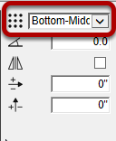
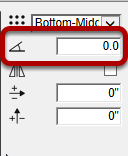
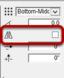
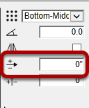
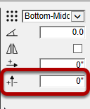
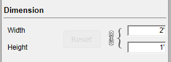
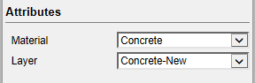

The placement point controls the location of the path in relation to the profile

Rotation allows you to specify a rotatation value to the Profile. The rotation should be set in degrees and will be applied counter-clockwise.
You can also specify a rotation as a V:H ratio (eg. 1:12)

The mirror attribute allows you to mirror the orientation of the profile about the vertical axis.

The X Offset value allows you to offset the location of the placement point in the horizontal direction.

The Y Offset value allows you to offset the location of the placement point in the vertical direction.

The width and height attributes allow you to scale the profile to your desired dimensions. By default, the width to height ratio is locked unless you click the Lock / Unlock button.
Click the 'Reset' button to return to the default scale of the Profile.

The Material and Layer attributes allow you to associate a default material and layer to be used when creating a Profile Member with this Profile.
The Material will be applied to the faces of the Profile Member only, and not the object (Group or Component) itself.
The Layer is applied to the Profile Member Instance (Group or Component). The faces of the object will be placed on the current active drawing layer.